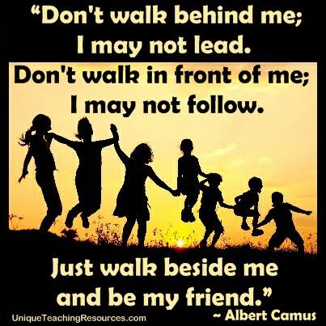

Introduction
Friendship is a pure emotion that two people can share with no egos and jealousy.Best friendships are those that happen unexpectedly.They carry a hidden charm that gives comfort when we are around our friends.
This blog contains about different stages of friendship in our life and what the true friendship means.Also the need of friendship in our life.
Friendship at Every Age
Childhood
Childhood friendship is simple and joyful. Friends play, laugh, and spend time together. They share their toys, snacks, and stories. They learn to help and care for one another. These happy memories often stay with them as they grow up.In our childhood,life feels like a mini adventure as we do very naughty things and end up with wounds and scratches.Even when we grow up and live apart , we still remember the good times we shared.
Teenage and School Years
Friends make school and teenage life more enjoyable. They study together, share ideas, and support each other through good and difficult times. They celebrate successes, laugh over small things, and create memories that stay with them as they grow older.This is the age where we share secrets and we start to build trust. Also, the age where we start to understand lifeand we expect loyalty and trust from the people around us.This is the stage where we get emotionally connected with our friends.
College and Young Adulthood
When everything goes smoothly ,enjoying with friends and all . Destiny plans something for us,it plans to test how strong our friendship is.We move to different colleges and different cities and rare phonecalls.They become like a second family to us.They look like the safest place where we can be who we are without pretending.They become locker to our life where we can share all our secrets without a second thought.The reassurance they give when your at your low stages of life and the confidence they give when you are worrying about failures or future whatever cannot be replaced by anyother.
Adulthood and Working Life
In adulthood, friendships often grow through work, shared interests, and everyday life. Friends listen, offer advice, and support each other through busy days and new challenges. Even when we feel stressed, a little time spent together can make a big difference.The understanding is the major reason that holds their bond even when they are apart from eachother.
Old age
In old age, friends can bring comfort, joy, and companionship. They spend time talking, sharing stories, and remembering the past.At their old age when they remember the things that they have done together in their past brongs a little smile on their faces,that is where they can realize how pure is their friendship. A familiar friend can make an ordinary day feel brighter. Friends also listen and offer support during difficult times. Staying connected with others can help older people feel less alone and more included. Their friendship adds warmth and meaning to everyday life.

The image shows children walking and playing together at sunset. Its message is that friendship means staying side by side, supporting each other, and sharing life as equals.A true friend walks beside you, no matter what the circumstances are they always stand by your side.
Friendship Across Life Stages at a Glance
| Life Stage | What Friends Give Us | Typical Friendship Style |
|---|---|---|
| Childhood | Fun, play, first social skills | Many friends, made easily |
| Teenage years | Understanding, identity, belonging | Close groups, strong loyalty |
| College and early adulthood | Support, independence, shared goals,Trust | New circles, long-distance bonds |
| Adulthood | Emotional support, stress relief | Fewer but deeper friendships |
| Old age | Companionship, shared memories | Lifelong friends, regular calls |
Why Friendship Matters
Friendship matters because friends support and encourage one another. They share our happy moments and listen when we feel sad. Good friends help us feel cared for and less alone. They make life happier and more meaningful.They make our life beautiful and they fill our life full of memories.Friendship is important because it improves your mental and physical health, enriches your daily experiences, and provides a vital support syste
5 levels of friendship. See Friendship.
Benefits of Good Friendships
- They reduce loneliness and stress
- They boost confidence, like a friend who says "you can do this"
- They help us grow and learn new things
- They celebrate our happiness and share our sadness
- They give us memories to treasure for life
Want to read more? See what Wikipedia says about friendship.
Simple Steps to Strengthen a Friendship
- Stay in touch with calls or messages, even short ones
- Listen more than you speak
- Remember birthdays and small moments
- Be honest, and forgive quickly
- Make time to meet whenever you can
Back to the top.
Conclusion
Friendship is an important part of life. Good friends support us, share our joys, and help us through difficult times. Whether a friendship begins in childhood, school, adulthood, or old age, it can bring happiness and comfort. We should value our friends and treat them with kindness and care.
"Friendship is the rainbow between two hearts sharing seven colours: Feeling,love,sadness,happiness,trust,faith,secrets&respect